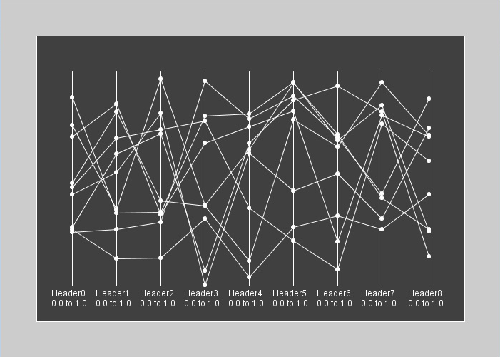
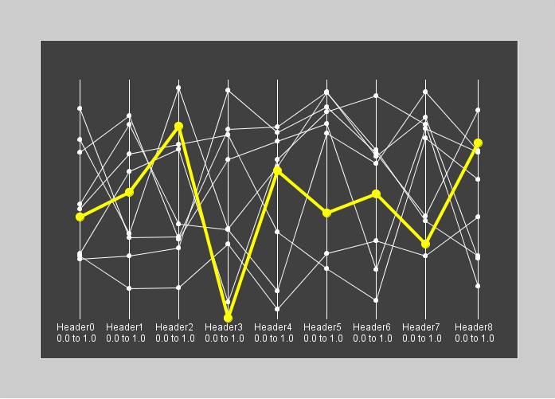

Parallel Coordinates Plot
It is a multi-dimensional plot where each dimension is drawn as a vertical line (axis). The values are drawn along the axis where the minimum value is at the bottom and the maximum value is at the top. Each line represent an element with its dimensions values. A line can be selected if the mouse is over one of its vertices.
|  |  |
Example:
import java.util.Random;
import plots.ParallelCoordinatesPlot;
import processing.core.PApplet;
import util.PickeableObjectEvent;
import util.PickeableObjectListener;
public class ParallelCoordinatesPlotExample extends PApplet implements PickeableObjectListener{
private static final long serialVersionUID = 1L;
private ParallelCoordinatesPlot parallelCoordinatesPlot;
public void setup()
{
size(700,500);
int coordinatesSize = 9;
int dataSize = 9;
double[][] minMax = new double[coordinatesSize][2];
double[][] data = new double[dataSize][coordinatesSize];
String[] headers = new String[coordinatesSize];
for(int i = 0; i < headers.length; i++)
{
headers[i] = "Header" + i;
minMax[i][0] = 0;
minMax[i][1] = 1;
}
Random r = new Random();
for(int i = 0; i < dataSize; i++)
{
for(int j = 0; j < coordinatesSize; j++)
{
data[i][j] = r.nextDouble();
}
}
parallelCoordinatesPlot = new ParallelCoordinatesPlot(this, headers, minMax, 50, 50, 600, 400, 50, 50);
parallelCoordinatesPlot.setData(data);
parallelCoordinatesPlot.renderNodesInfo(true);
parallelCoordinatesPlot.addListener(this);
parallelCoordinatesPlot.setId(20);
}
public void draw()
{
if(parallelCoordinatesPlot.mouseIsOverFeedback())
{
background(1);
}
parallelCoordinatesPlot.drawObject();
}
@Override
public void eventTriggered(PickeableObjectEvent event){
System.out.println("message from " + event.getSource().getClass().getName() + " id: " + event.getSource().getId() + " event: " + event.getEventType());
}
}